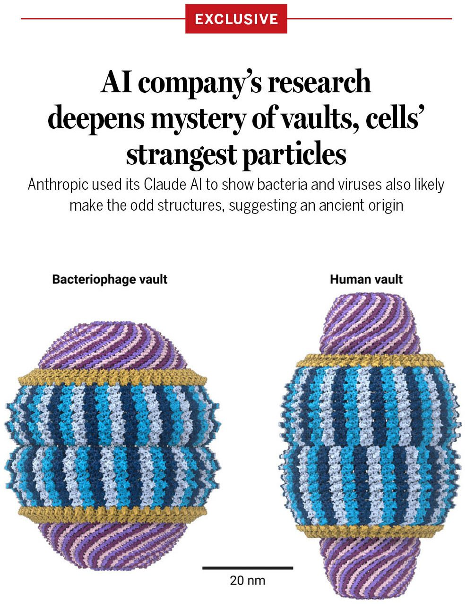

Today, as part of Operation Economic Outcast, Treasury targeted the vast criminal network of India-based Suniel Kumar Sharma and his spouse, Jaspreet Preeti Shahid, who have supported Iran’s shadow fleet through a web maritime fraud. Their schemes have provided false flags and certifications to sanctioned vessels involved in transporting Iranian petroleum, including vessels operating on behalf of the Iranian military and its proxies.
https://home.treasury.gov/news/press-releases/sb0681/
The Department of War's Office of Strategic Capital (OSC) announced today a $150 million conditional loan commitment with LeoLabs, Inc., a leading provider of Space Domain Awareness (SDA) and Space Traffic Management (STM) solutions. This financing would accelerate the deployment of critical radar infrastructure and advanced decision science software, helping sustain American leadership in the increasingly contested space domain.
In alignment with OSC's mission to attract private capital to national security priorities, the conditional loan is matched dollar-for-dollar with co-investment, resulting in a capital infusion of $300 million. The financing would scale production and deployment of multi-mission phased array radars, significantly expanding U.S. radar manufacturing capacity and sensing infrastructure.
This financing would directly support Department of War priorities by expanding LeoLabs' global footprint and accelerating the production and deployment of advanced sensor hardware, including the company's mobile "Scout" radar units.
"To maintain our strategic advantage, we must leverage the innovation and agility of the American commercial sector," said David A. Lorch, Director of the Office of Strategic Capital and Senior Advisor to Deputy Secretary of War Steve Feinberg. "This financing equips the Department of War with unparalleled Space Domain Awareness capabilities and demonstrates our commitment to unleashing private capital to solve our most pressing national security challenges. By supporting the expansion of a globally distributed, wholly domestic space radar architecture, this transaction bolsters U.S. resilience against geopolitical disruptions in orbit and ensures that next-gen technologies are powered by secure, domestically sourced data."
As the only commercially available provider of ground-based radar space domain awareness in the United States, LeoLabs is uniquely positioned to deliver this critical infrastructure and enhance space monitoring capabilities. LeoLabs' globally distributed radar network allows for rapid, continuous cloud-based data updates and unclassified information sharing, making it a critical commercial capability for national defense and for allied partners.
"High-precision orbital tracking is integral to the U.S. economy and the defense industrial base, and its importance is only going to grow on account of the rapid commercialization of space," said Jordan B. Sebold, Senior Managing Director (Investments) at OSC. "OSC's investment in LeoLabs will help ensure we maintain persistent custody of the objects that matter most."
The conditional loan commitment specifies additional steps LeoLabs must complete before financial close, including satisfying various financial, legal, technical, investment, due diligence, and other requirements.
"I applaud OSC for another strategic investment in the important space domain sector," said Emil Michael, Under Secretary of War for Research and Engineering. "Maintaining American space superiority means we must scale commercial capabilities that enhance decision-making for the Joint Force. This OSC financing ensures the United States and our allies control the data needed to maintain our decision advantage in orbit."
Read the full press release here: https://www.war.gov/News/Releases/Release/Article/4641087/department-of-wars-office-of-strategic-capital-signs-150-million-conditional-lo/
Exclusive: Artificial intelligence has tackled a mystery that has flummoxed cell biologists for decades.
Today, Anthropic reports its key #AI model, Claude, has helped unearth new clues about vaults—strange, barrellike structures, found by the thousands in animal and plant cells, that still have no known function despite scores of studies.
In a blog post and related preprint, Anthropic describes how its small team of in-house biologists, guided by Claude, produced the first direct evidence that bacteria, viruses, and perhaps other simple microbes also make the odd structures.
Learn more: https://scim.ag/4eRMQRV

Quantum researchers are searching for a topological superconductor – a material that, if discovered, would allow major advances in quantum computing by combining two distinct “flavors” of superconductivity.
This potent material remains elusive, but Cornell researchers have shown that uranium ditelluride can exhibit both flavors at once, making it the leading candidate.
Read more: https://news.cornell.edu/stories/2026/10/two-flavors-superconductivity-material-has-right-ingredients-twist
BREAKING: SpaceX partners with Qualcomm to build a nationwide Starlink Mobile 5G network in the U.S., with rollout beginning in 2027.
🚨 BREAKING: Sec. Markwayne Mullin announces DHS will be COMBING THROUGH election logs nationwide to make sure illegal aliens and noncitizens did not vote — and if they did, BIG FAFO IS COMING
"We WILL be looking at the registers and all the voting and all those that voted after the election — and making sure that no one voted illegally, because even even past this election, it is still DHS's job to make sure that this was an election that was handled by the federal laws. Meaning that only those that were legally able to vote, voted."
"After this election we'll be gathering voting logs, and we'll be going through those and making sure that no illegals voted."
Noncitizen voting is already a federal crime. Now FINALLY we are actually checking!
DOJ has charged noncitizen voters in multiple states this fall
Every illegal ballot cancels out an American's vote!
The days of "trust us" elections are OVER! 🇺🇸
Release: Kansas Secretary of State's Office to Initiate Post-Election Audit #ksleg #kselections
Federal grand jury indicts 10 noncitizens who illegally registered to vote in California https://www.justice.gov/usao-cdca/pr/federal-grand-jury-indicts-10-noncitizens-who-illegally-registered-vote-california
Faith. Liberty. Freedom.
The principles that founded this nation and generations of patriots fought to defend. We will never stop fighting to preserve them.
BREAKING:
Netanyahu officially loses majority in Israel’s election.
JUST IN: 🇺🇸 $10 trillion Morgan Stanley becomes one of the first major banks to tokenize US stocks and bonds on the blockchain.
JUST IN: 🇺🇸 Stripe now allows US businesses to send stablecoin payments directly to crypto wallets in over 160 markets.